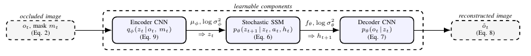
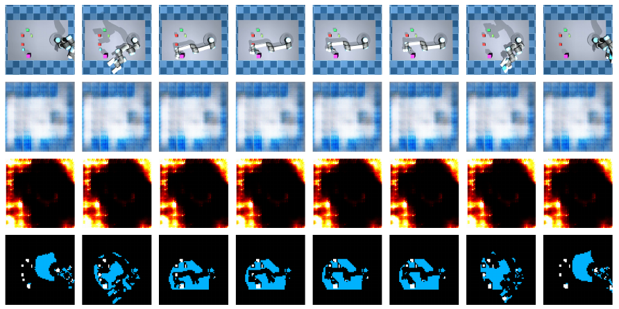
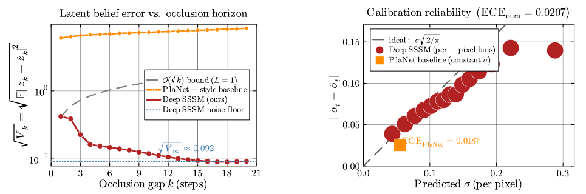

Seeing Beyond VisionWhen vision disappears, how far can a learned belief drift? Deep SSSM combines mask-aware inference and stochastic latent dynamics to study bounded-error belief tracking under visual occlusion. Its central result links transition contractivity to a bound on latent rollout error; a MuJoCo UR5e study examines the conditions and behavior behind that result. Model From observations to predictions. A mask-aware encoder infers latent states; a GRU-conditioned stochastic transition propagates them; a decoder reconstructs images and estimates per-pixel uncertainty. Architecture from Figure 1 of the paper. Training combines a variational objective, variance calibration, and a sparse-Bayesian latent regularizer. Bounded Drift under OcclusionUnder strict contractivity L < 1 and the stated residual-noise and encoder assumptions, the mean-square latent rollout error satisfies:
Vk ≤ L2kV0
+ σ2(1 − L2k)/(1 − L2).
The initial-error contribution decays and the bound approaches a finite noise floor. Recurrent visibility yields a peak-of-cycle bound. At L = 1, the RMS bound instead grows as O(√k). What is bounded? Rollout drift relative to the encoder-reference latent. The result is conditional: the reported L is empirically estimated, and pixel-level calibration is a decoder-mediated proxy. Physical-state bounds require additional decoder-bridge conditions. Evidence: MuJoCo UR5e1,000 episodes × 50 frames. A small target is occluded in about 89% of frames; its mean visible area is approximately 0.146% of the image. Visibility masks are supplied by simulator segmentation.
 Perception under occlusion. Inputs, reconstructions, uncertainty maps, and segmentation across eight timesteps (paper, Figure 4). Global image error is dominated by the background; target-region error is reported separately above.  Stability and calibration are distinct. Latent rollout error contracts while the decoder represents spatially varying uncertainty (paper, Figures 5–6). Ablation insight. Zeroing the stochastic head preserves measured contraction but worsens ECE from 0.021 to 0.090. The modified PlaNet baseline shows growing latent error; because multiple components change together, that comparison does not isolate the mask's effect alone. From Belief Tracking toward ControlThe demonstration runs Deep SSSM alongside a joint-level PD controller; uncertainty is displayed, not used to choose actions. The demonstrated scope is simulated belief tracking and reconstruction. Target-pose accuracy, grasp success, and uncertainty-aware control remain future evaluations. Within World Models and Control, this work supplies the inference and prediction foundation. Related studies address physical-latent certification and controller-aware belief corrections. PaperDeep SSSM: Provable Bounded-Error Latent Belief Tracking under Visual Occlusion. |